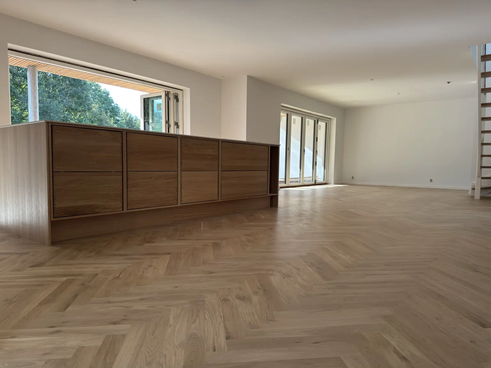
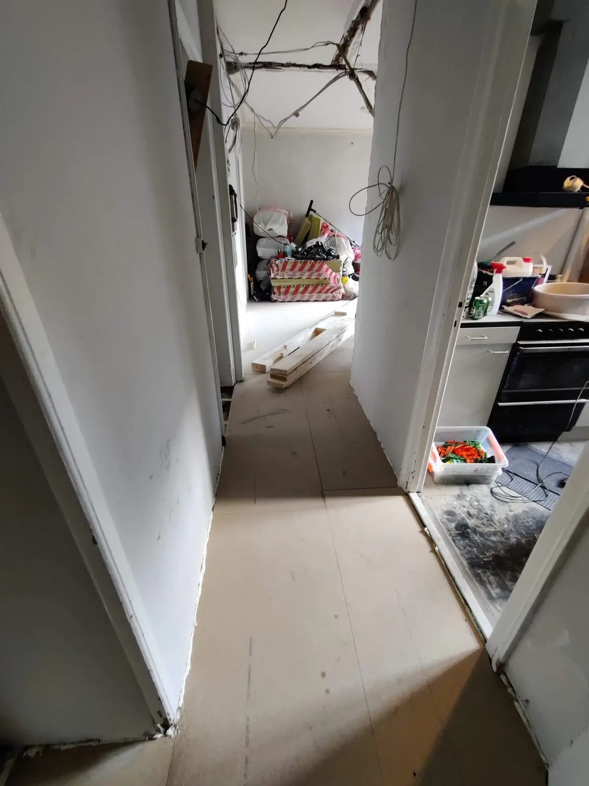
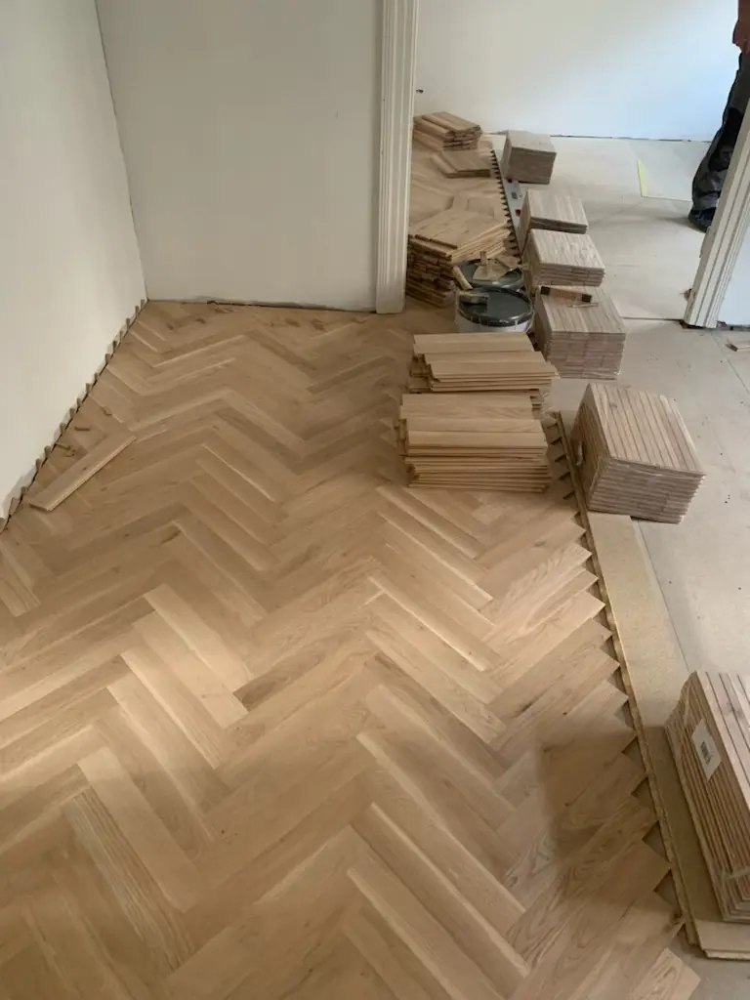
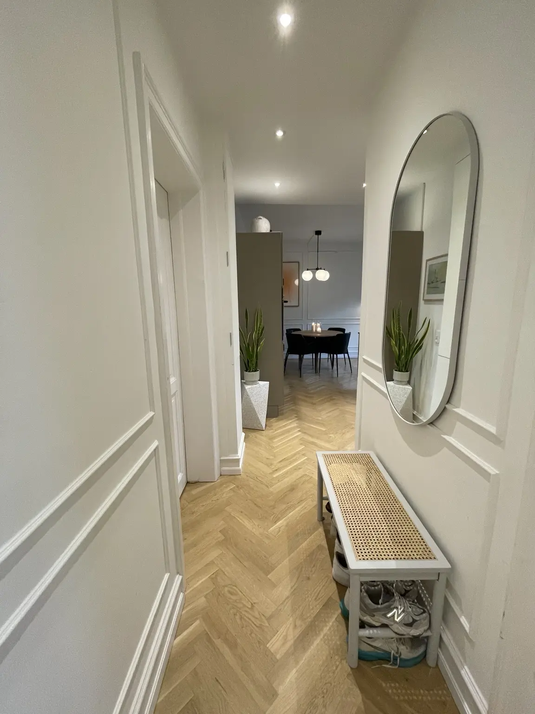

Gulvet og professionel lægning
- 450 × 70 × 16 mm massiv eg i Natur
- Professionel lægning af sildebensmønsteret
- Moms
Nordisk Sildeben en del af Homie
Kampagneprisen inkluderer selve gulvet og professionel lægning og forudsætter et plant, tørt og læggeklart undergulv.
Vi kan også stå for hele løsningen med fjernelse af eksisterende gulv, nivellering, lægning, spartling, slibning og den ønskede olie- eller lakbehandling. Vi arbejder i København og på hele Sjælland. Større projekter udføres også i resten af Danmark.
Kampagneprisen gælder projekter på mindst 30 m². Fjernelse af eksisterende gulv, nivellering eller opbygning af undergulv, spartling, slibning og efterbehandling er ikke inkluderet.

Kampagnepris uden småt
Fra-prisen gælder 450 × 70 × 16 mm massiv eg i sortering Natur ved projekter på mindst 30 m² og et læggeklart undergulv.
Den endelige pris afhænger af stavlængde, sortering, undergulv og efterbehandling.
Gratis og uforpligtende
Fortæl kort om dit projekt, så vender vi tilbage med næste skridt. Du får et fast, skriftligt tilbud, når vi har vurderet opgaven.
Beskriv projektetOplys areal, postnummer og den ønskede løsning.
Vedhæft gerne billederBilleder eller plantegning gør det lettere at vurdere opgaven.
Vi følger opVi kontakter dig om prisoverslag eller en gratis opmåling.
Fortæl om dit gulvprojekt
Nordisk håndværk
Vi hjælper med mere end selve lægningen. Retning, midterlinje, sortering, afslutninger og behandling planlægges samlet, så gulvet opleves roligt og gennemført.
Resultatet er et tidløst gulv, der passer til både klassiske lejligheder og moderne, åbne køkkenrum.
Massivt sildeben kan slibes og genbehandles flere gange og kan derfor være en langsigtet investering i boligen.
Udvalgte projekter
Følg processen fra det klargjorte undergulv til det færdige sildebensgulv — og se vores nyeste projekter på Instagram.



Komplet lejlighedsrenovering med massivt sildebenHer lagde vi 85 m² sildebensgulv i 450 mm massiv eg, rustik sortering, efterbehandlet med 3 lag 2-komponent mat lak. Derudover monterede vi vægpaneler og rensede den eksisterende stuk.
Vælg dit udtryk
Vi viser prøver ved gennemgangen, så træets sortering kan vurderes i det rigtige lys.
Et levende udtryk med naturlige knaster og større variation i træets spil.
Balancen mellem ro og karakter – et klassisk valg til nordiske hjem.
Et rent og ensartet udtryk, hvor selve sildebensmønsteret står tydeligst.
Gulvene kan også leveres i 22 mm tykkelse og i andre længdemål efter aftale.
Mere end sildeben
Sildeben er vores speciale, men vores gulvfolk hjælper også med andre gulvløsninger. Vi rådgiver om materialevalg, undergulv, overgange og den finish, der passer til boligen.
Fra rum til resultat
Vi ser rummet, undergulvet og de nødvendige afslutninger.
Du vælger sortering, stavlængde og den ønskede efterbehandling.
Undergulvet kontrolleres og nivelleres efter behov.
Mønster, kanter og overgange udføres med fokus på detaljen.
Godt at vide
450 × 70 × 16 mm massivt sildebensparket i eg, sortering Natur, samt professionel lægning og moms. Prisen gælder projekter på mindst 30 m² og forudsætter et plant, tørt og læggeklart undergulv.
Nej. Spartling, slibning, lakering, oliering og anden efterbehandling er ikke inkluderet i kampagneprisen.
Komplette, færdigbehandlede løsninger tilbydes fra cirka 1.195 kr. pr. m² inkl. moms. Den endelige pris afhænger af stavlængde, sortering, undergulv og efterbehandling.
Ofte ja, men det afhænger af højde, stabilitet og planhed. Det vurderer vi ved den gratis gennemgang.
Sortering, stavformat, undergulv, nivellering, afslutninger og den valgte efterbehandling.
Vi arbejder i København og på hele Sjælland. Større projekter udføres også i resten af Danmark.
Ja. Et massivt sildebensgulv kan normalt slibes og genbehandles flere gange afhængigt af gulvets tykkelse og tilstand.
Massivt sildebensparket på Sjælland
Nordisk Sildeben leverer og lægger massivt sildebensparket i København, Nordsjælland og på resten af Sjælland. Vi rådgiver om stavlængde, sortering, mønsterets retning og den behandling, der passer til rummets brug og udtryk.
Før arbejdet starter, kontrollerer vi undergulvets planhed, stabilitet og fugtforhold. Hvis gulvet kræver nivellering eller en ny opbygning, beskrives det særskilt i tilbuddet.
Du kan vælge kampagneløsningen med gulv og lægning eller lade os udføre hele processen fra fjernelse af det eksisterende gulv til den afsluttende olie- eller lakbehandling.